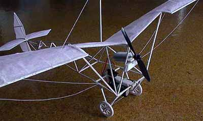

Hi,
As promised, I eventually got a photo to show you. After some short trials, I flew the plane with a red plastic prop (6") using 1/8 rubber and it flew nicely in a school gym (before finally crashed into a wall) but I had to add nearly 15 g of nose weight as you already predicted. I had only 4 wires all up and the loose flying wires (in photos) will get tightened up during flight.
The spoked wheels that I glued up from small balsa sticks are really ugly compared to what you can make, the front wheels got raised up to accommodate the 6" propeller mounted in near top middle prevent it from touching the ground.
After playing with the rubber motor, I then decided to try the electric motor (smaller prop) using two 10F capacitors as power source. After some short promising static / taxiing tests inside the living room, I got it started flying in the garden and it crashed onto the ground and badly fractured. It is now under repair and I will make it a rubber powered again, I think it is too fragile for electric motor. Just to keep you in touch.
Cat
Copyright 1998, Thayer Syme. All rights reserved